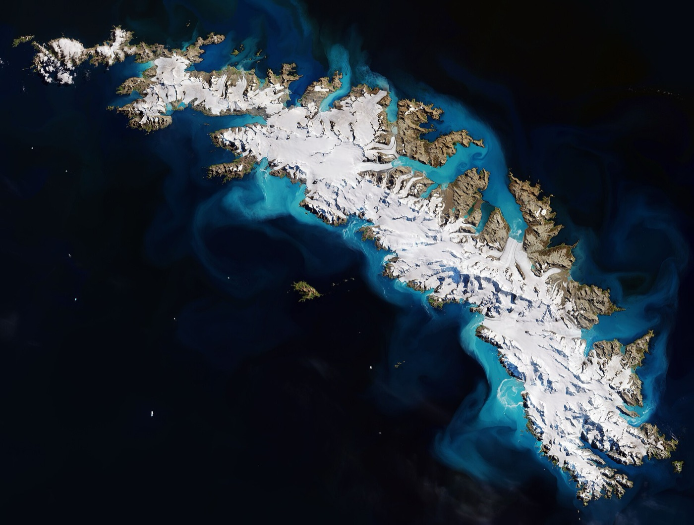

Sun-synchronous + polar orbits — the Earth-observation backbone
Sun-synchronous orbits cross every point on Earth at the same local solar time daily. Nearly polar, retrograde, tuned to use Earth's equatorial bulge as a precession motor — the trick behind consistent Earth observation.
A sun-synchronous orbit (SSO) is a near-polar orbit (inclination usually 96-99°) at low to mid-LEO altitude (600-900 km) whose orbital plane rotates eastward at exactly the same rate Earth orbits the Sun — 360°/year, or about 0.9856°/day. The effect: the angle between the satellite's orbital plane and the Sun stays constant year-round, so the satellite always crosses any given latitude at the same local solar time. A Sentinel-2 spacecraft, for instance, crosses the equator on the descending node at 10:30 local time every single day; this is what lets you compare a Landsat image of a forest from 2010 to one from 2025 and know the lighting conditions are similar.
The mechanism is gravitational. Earth is not a perfect sphere — the equatorial bulge (about 21 km extra radius at the equator vs the poles) creates a non-central gravity field. For a satellite in a non-equatorial orbit, that asymmetry exerts a torque that gradually precesses the orbital plane. The rate of precession depends on altitude and inclination: lower altitudes precess faster; inclinations between 90° and 180° (retrograde orbits) precess eastward. There's exactly one combination of altitude + inclination for any given altitude that gives 0.9856°/day precession — those are the sun-synchronous orbits. At 800 km altitude, SSO inclination is 98.6° (8.6° past polar, retrograde). At 600 km it's 97.8°. At 400 km it's 97.0°.
Almost every Earth-observation satellite operating today lives in SSO. ESA's Copernicus programme (Sentinel-1A/B/C/D radar imaging, Sentinel-2A/B/C/D optical imaging, Sentinel-3A/B ocean monitoring, Sentinel-5P atmosphere) — all SSO. NASA/USGS Landsat 8 + Landsat 9 — SSO, 705 km, 98.2°, descending-node 10:00 local. NOAA polar weather (NOAA-20, NOAA-21, Suomi NPP) — SSO. Planet Labs' PlanetScope fleet (~150 active CubeSats) — SSO at 475 km. Japan's GCOM-W1, China's Gaofen series, India's Resourcesat. The reason every operator picks SSO is the same: consistent illumination geometry lets you build time-series data products (vegetation indices, snow extent, ocean colour) that mean something across years.
Polar orbits without sun-synchrony are rare and special. A truly polar orbit (90.0°) is one specific case; below 90° is prograde, above 90° is retrograde. Some military reconnaissance satellites (KH-11 / EVOLVED ENHANCED CRYSTAL — NRO) use near-polar non-SSO orbits to vary their lighting angle deliberately. ICESat-2 (NASA, 92° inclination, 488 km) is near-polar but at a slightly non-SSO altitude to give better coverage of the high-latitude ice sheets it's designed to measure. The non-SSO polar regime trades consistent lighting for better ground-track variety.
SSO downside: launch energy. Reaching SSO at 98.6° inclination from anywhere below ~45° latitude requires substantial inclination change from the launch site's natural inclination. Launching south-bound out of Vandenberg Space Force Base (34.7°N) or Plesetsk (62.9°N) or Wenchang (19.6°N for southerly launches over open water) is the standard approach. The ΔV cost of inclination change at LEO is roughly 130 m/s per degree, so a typical SSO ascent from Florida (Cape Canaveral, 28.5°N) would cost an extra ~9 km/s of inclination-change ΔV — utterly impractical. This is why Vandenberg exists as a dedicated west-coast launch site, and why Plesetsk and Sriharikota and Hammaguir (early French) were chosen for high-inclination launches.
